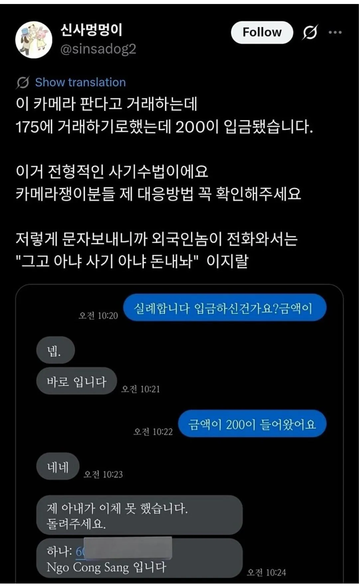
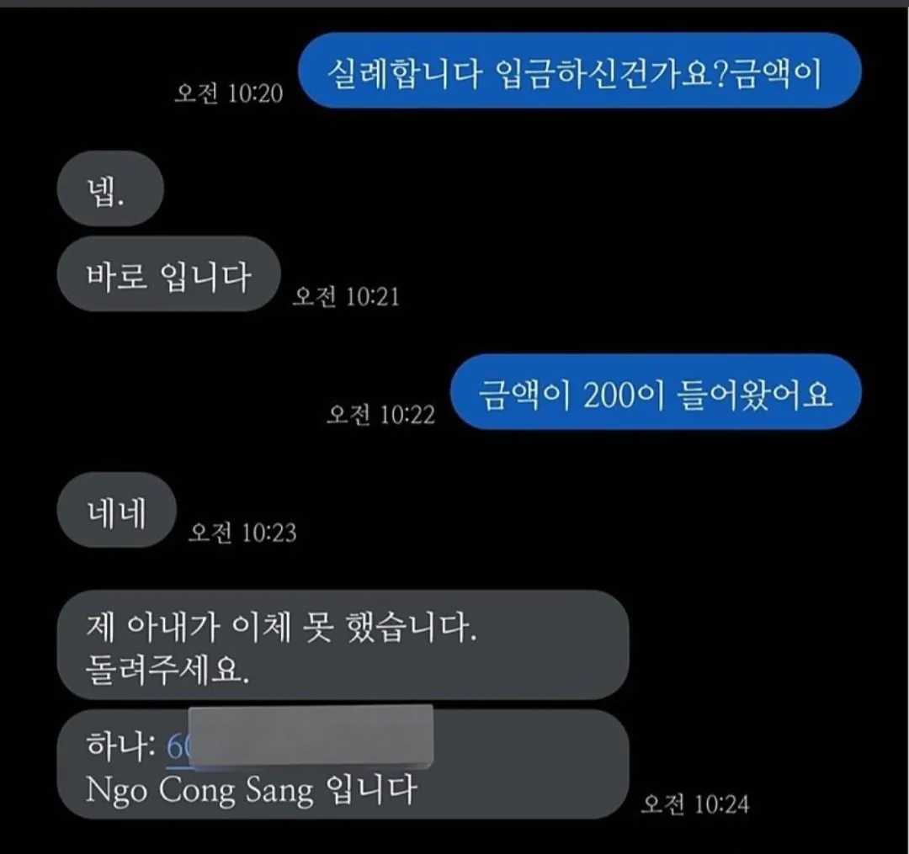
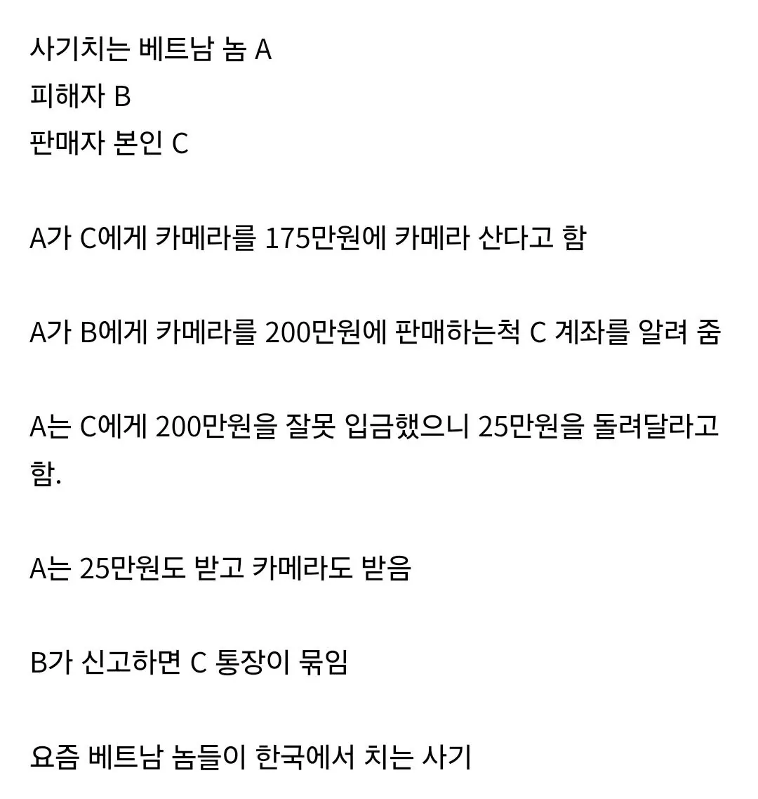

25만원 줘도 묶이잖아
3자 사기 중간에 껴있던 적 있는데
신고 당하면 몇 달 해당 계좌 정지되고 은행업무(대출 등) 싹 막힘
이거 때문에 아파트 계약 찍었는데 계약금 다 날릴뻔했음
물론 사기친 사람은 자본주의에서 금전 사기 친거니 형벌 쎄게 맞아야한다고 생각함
물론 중간에 껴있던 사람 입장에서 물건도 확인 안하고 돈 보내는 사람이 좋게 보이지는 않음
3자사기는 유우우명한 사기방법이지
보낸사람 계좌가 받는사람한테 안 보이는게 개인정보 보호 측면에선 좋긴 하지만, 이런 문제가 있으니 개인이 거래 건별로 전부 혹은 일부 반환을 계좌정보 노출 없이 쉽게하는 기능이 있어야 할 듯.
왜 송금인를 안보여주는거지
송금인은 나오지. 송금계좌가 안 나올 뿐. 은행 전산화 초기에 거래내역 표기할때 송금인 계좌번호는 길고 누구인지 어떤돈인지 알아보기 힘들어서 송금 성격 알리는 7자 내외 메시지로 표시하던게 지금 상태로 굳어진거라고 듣긴 함.
근데 송금계좌를 알면 자연히 실명노출이 되는지라. 꺼리는 사람들 많긴 함.
ㅇㅇ 그거 말한거
결론적으론 걍 관행+개인정보 노출이라는 명분 조합이 아닐까 싶음
대응법은 어디감?
대응법 전화를 한다. 당근에 연락한다 경찰에 의심된다 신고한다?.
예시대로라면 그냥 존나게 마진 잘 붙여먹는 중간거래상 아니냐 ㅋㅋㅋ
B는 돈만 날리고 카메라를 못받았는데?
걍 중간에 껴서 다 훔쳐먹는 씹새끼지
아 아니네 ㅋㅋ 잘못생각했구나. 실제로 카메라를 보내도 중간 차익이 -25구나
외국인인거같으면 직거래를 하던지 계좌거래는 절대하지않는게 철칙임 베트남교민인데 여기서도 중고거래할때 베트남계좌에입금할때는 주의하라고 신신당부함
그럼 니 계좌가 묶이는데?